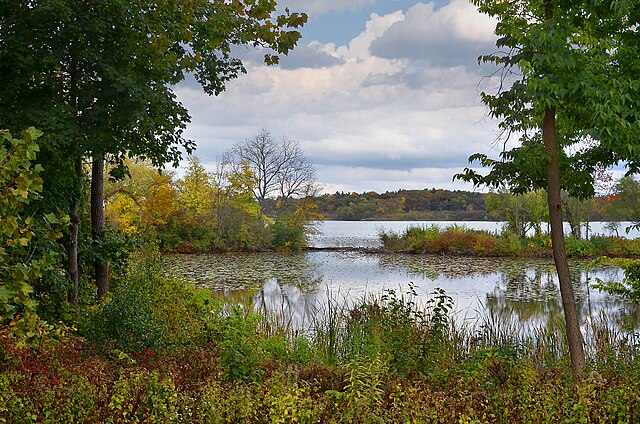

Lake Wingra Software

Lake Wingra Software was an independent software consulting company based in Madison, Wisconsin, operating from 2022 to 2026. We partnered with teams across healthcare, manufacturing, retail, and agriculture to deliver high-quality software through Test-Driven Development, refactoring, and DevOps practices.
Lake Wingra Software is not currently taking on new work. Thank you to everyone we had the pleasure of working with!
Projects
- Elevator Saga 2 (repo) - the elevator programming game
- Zoom Backgrounds - assorted video call backgrounds
- Bug - weevil simulator
- Starfield - starry geocities vibes
AI Art
- Birds on Bikes - Sonnet 4.6
- Birds on Bikes II - Haiku 4.5
- Birds on Bikes III - Opus 4.7
- Birds on Bikes IV - Fable 5
- AI Images (SDXL)
Links
Consulting resources
Learning resources
Fun
Media
- The Company of the Future (2026-10-20)